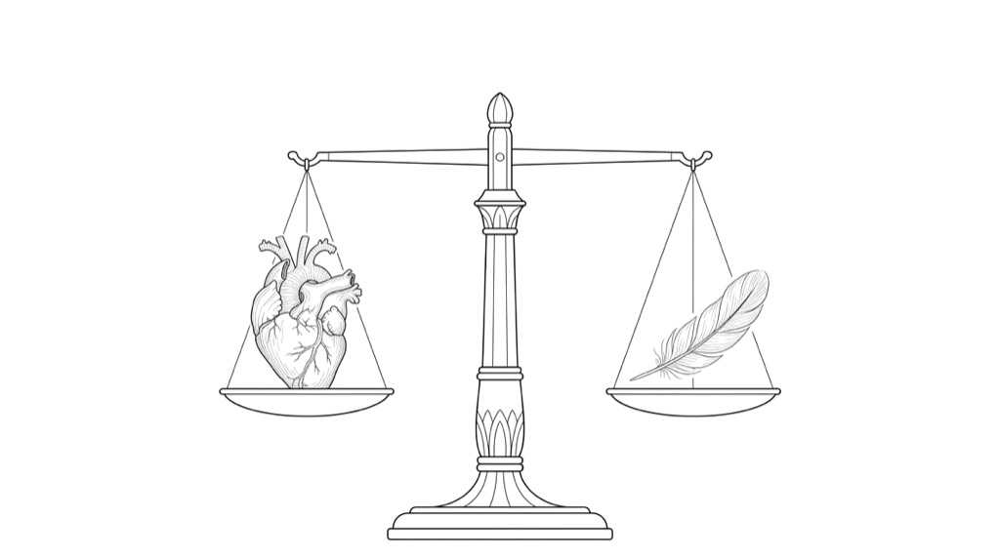

一個被主流學界長期排斥的作家，在心臟手術的幾週前坐下來講了二十二分鐘。他沒有為自己的歷史主張辯護，講的是別的東西：一個用來盤點自己一生的古老架構、他做對與做錯的事，以及一句他認為在文法上就已經背叛科學的話，「相信科學」。這篇不整理他的考古主張，只收他談方法與態度的那部分，並且會告訴你這些話該打幾折。
Graham Hancock 是記者出身的作家，主張有一個失落的先進文明在冰河期末被毀滅。主流考古學界普遍不接受他的具體歷史主張，這場爭論相當激烈。這篇完全不碰那些主張，也不為它背書，那不在我判斷得了的範圍。這裡只收他談方法與態度的部分，因為這些話值不值得聽，跟他的考古說法對不對，是兩件可以分開的事。
但也要誠實記住反面：一個長期被否定的人，本來就有動機去質疑「權威判準」這件事本身。他對科學建制的批評有多少是洞見、有多少是處境使然，這篇不下定論。另外這是精華剪輯，不是完整訪談，段落之間本來就是跳的。
先講一件會改變你聽這段話的語氣的事：他在錄這集的時候，幾週後就要動心臟手術。他自己那句話是：「我十年前還覺得自己是不朽的。」
他不是在做抽象的死亡哲學，是一個知道自己在倒數的人在講話。整篇的直白、不修飾、有點急，都從這裡來。這篇按影片順序走，最後一段是我加的：這些話你可以怎麼用，以及他哪裡講得太滿。
01他拿來衡量一生的那把尺，來自四千年前▶ 0:23
他引用古埃及《死者之書》裡的「審判場景」。重點是他明說不是把它當成對來世的字面描述，而是當成一個評估架構，這個區分很重要，否則接下來的東西會被當成宗教內容跳過。
場景是這樣：亡者走進一個大廳，盡頭坐著冥神。心臟被放在天秤的一端，另一端是女神瑪特的羽毛，羽毛代表真理、和諧與宇宙秩序。你的心不能重於那根羽毛。大廳的牆上還有四十二個小人像，亡者要逐條向他們聲明自己沒做過哪些事。
他把整套濃縮成一個問題：「你被給了一次生命，你拿它做了什麼？」

你的一生 一根羽毛的重量＝真理與秩序
它把「一生」變成一個會被逐條盤點的東西，而不是一團模糊的感覺。四十二條這個形式本身就是重點：它問的不是「你是不是一個好人」，是「這件具體的事，你做了沒有」。
這跟庫裡 信仰需要理由嗎 談的是同一種動作的兩面，那篇說相信要有理由，這裡說評價自己也要有具體條目。兩個人都在反對「憑感覺就算數」。
02「我十年前還覺得自己是不朽的」▶ 2:57
承上，會去找一把尺來量自己，通常是因為知道時間有限了。
這句話是笑著說的，但它是整段訪談的樞紐。不朽感不是一個信念，是一種預設，你不會特別去想它，直到它消失。他形容的正是那個消失的過程。
這一段沒有什麼可以「學起來」的資訊，但它決定了後面所有話的份量：接下來他講的每一件事，都是一個沒有時間再修飾自己的人挑出來講的。
03他自己的盤點，排第一位的不是作品▶ 4:05
承上，既然要盤點，他先盤的是哪一項？不是書、不是影集、不是任何一個歷史主張。是關係。
他談妻子 Samantha、談三段破碎婚姻留下的六個孩子、談九個孫子。他把破碎婚姻明確歸為自己的責任，不推給環境。
他對愛的定義只有一句：
愛就是給予。
Love is giving.
他說他花了很久才學會這件事。這句話短到幾乎像陳腔濫調，但放在「一個人手術前挑出來講的第一件事」這個位置上，它的重量不一樣。
庫裡 好關係與美好人生 是一份追蹤了七十五年的縱貫研究，結論是：預測晚年幸福與健康最強的變項是關係品質，不是成就或財富。
一個從死亡逼近的主觀視角挑出來的第一順位，跟一份七十五年的長期資料得出的第一順位，在這裡重合了。這種重合本身就是一種弱證據，不強，但兩條完全獨立的路徑指向同一個地方，值得記一下。
04他唯一說無法原諒的事：被用標籤取代閱讀▶ 7:49
承上，盤點裡有做對的，也有他過不去的。這一段是他情緒最重的地方。
他被公開指控帶有種族主義（源於他的失落文明說被讀成「否定原住民的成就」）。他的憤怒不在於被批評，他明說被批評是家常便飯。他過不去的是：那個標籤會讓人不必讀他寫了什麼，就能結案。
他把這歸因於一件更大的事：「一個很多人已經不讀東西的社會。」
他描述的是一種現在很常見的爭論形式：用標籤取代閱讀。標籤的功能是讓人省下理解的成本，貼上去，這個人就不用再被聽了。
把這一段跟他下面主張的「去查證」放在一起看，會發現它們是同一枚硬幣的兩面：要求別人去查證，前提是拒絕用標籤結案；反過來說，在一個習慣貼標籤的環境裡，「查證」這個動作根本不會發生。
05專家為什麼會領地式地反應▶ 9:20
承上，他接著把個人的委屈抽象成一個結構觀察，這一段比上一段有用得多，因為它不需要你同意他是被冤枉的。
他的說法是：專家容易被鎖進一個特定的參照框架裡，並且會領地式地捍衛它。原因不神秘，一個人花二三十年建立一套框架、整個學術聲望都建在裡面時，挑戰那個框架就等於挑戰他的人生。所以反應會是防衛性的，而不只是學術性的。
- 結論不確定，是因為資料就是不夠
- 這是科學方法內部的正常狀態
- 結論看起來很穩，是因為沒有人去測
- 維持它的人，職涯都建在它上面
它可以拿來免疫任何反駁：「你們反對我，只是因為既得利益。」Hancock 自己就有這個嫌疑。
所以判準要收窄：這條只能用來解釋「為什麼反對來得這麼快、這麼情緒化」，不能用來取代「他到底有沒有證據」。一旦它被拿去補證據的缺口，它就從洞見變成藉口。
06他對現況的判斷：技術跑得比心智快太多▶ 10:04
承上，從「一個領域怎麼卡住」放大到「整個物種怎麼卡住」，是他自己做的跳躍。
他說人類正站在深淵的邊緣，理由是一句話：我們的技術跑得比我們的心智成熟度快太多。他認為人為的風險（他明確點到核武）比任何天文災難都近。
這個判斷本身不新，但它跟前面幾段是連著的：一個把判斷權交出去、不再自己查證的社會，在技術加速的時候特別危險。
07他的解方方向，以及他講得太滿的地方▶ 14:14
承上，講完問題他給了方向，這也是全篇最該打折的一段，所以直接標出來。
他的方向是「合一」：強調人類共通的東西大於那些造成分裂的差異。這部分是價值主張，沒什麼好爭。
但他接著半開玩笑半認真地說，應該讓世界領袖服用死藤水。這一條當成他的個人主張看待就好，不是可執行的建議，他對迷幻藥的整體立場本身也是有爭議的，而且這裡他用的正是他自己在下一段要批評的那種思路：一個未經檢驗的解法，被當成不需要檢驗的結論。
08「我們已經在夢遊般地崇拜一個機器神」▶ 19:58
承上，他對「把判斷權交出去」這件事最尖銳的版本在這裡。
他說的不是未來式，是現在式：人類已經把判斷權交給了系統，而不是自己去查。他用的字是「夢遊般地」，重點在於這不是誰做的決定，是一個沒有人特別同意過就發生的滑移。
這一段跟庫裡談 AI 的幾篇形成一個有趣的對照：那些篇談的是這個系統能做什麼、風險在哪，而他談的是我們對它的姿態。兩種問題都要問，但通常只有第一種會被問。
09核心那句：不是相信科學，是查證科學▶ 20:36
承上，前面所有段落都在往這一句走。他的原話是：他不想再聽到「trust the science（相信科學）」這幾個字，對他來說那句話應該是「investigate the science（去查證那個科學）」。
他的論點只有一步，但這一步很硬：質疑不是科學的敵人，質疑就是科學本身。科學不是一組該被相信的結論，是一套持續檢驗結論的方法。一個「不准被質疑的科學」在結構上跟宗教沒有差別。
- 結論由權威發布
- 質疑等於反科學、反社會
- 於是結論不再被檢驗
- 結構：權威 · 教條 · 異端
- 結論永遠是暫時的
- 質疑就是這套方法本身的動作
- 於是結論持續被檢驗
- 結構：方法 · 暫定 · 可修正
「凡事自己查證」在一個高度分工的社會裡是做不到的，你不可能自己驗證疫苗試驗、橋樑結構、飛機維修。某種程度的「相信專業」是文明運作的前提，不是墮落。
所以真正的問題不是「該不該相信」，是「相信誰、相信到什麼程度、什麼情況下該自己去看」。他把整件事講成非黑即白，這是他這段話最弱的地方。
可操作的版本：風險越高、越難反悔、而你越有能力查的事，越要自己查；反過來的就安心授權出去。這條在工程決策與投資決策上可以直接用。
他最後說，他想留下的遺產不是任何一個歷史主張，是「獨立探究」這件事本身，鼓勵人自己去看、自己去查，不要因為某個機構說了就算數。就一個爭議這麼大的人來說，這個遺產定義得意外地謙虛。
庫裡哲學這一區現在有三篇在問同一件事：證據不足時，憑什麼相信。信仰需要理由嗎 從有神論那側問（相信要有理由，不是盲目跳躍）；廣義相對論與科學發現的極限 從物理學內部問（有些東西原則上就測不到）；這篇從體制外問（有些東西沒人有動機去測）。
建議的閱讀順序是先讀相對論那篇再讀這篇，才不會把「科學有極限」誤讀成「所以什麼都能信」。另外，同一批整理的還有 老化是可以重灌的嗎，同一個節目、兩種相反的姿態，一個在實驗室裡說科學會解決老化，一個在外面說別把科學當宗教拜。
—怎麼用在你身上
- 「查證科學」是一把可以馬上用的刀，而且用法很具體：下次看到任何「專家說／研究顯示」，問的不是「這個專家可不可信」，而是「這個結論在什麼條件下會被推翻，現在有沒有人在檢驗它」。前者會讓你陷進人身判斷，後者會直接指向證據。
- 拿同一批整理的另一篇當練習題：Sinclair 那篇 的講者是完全體制內的哈佛教授，Hancock 是完全體制外的作家。但要判斷 Sinclair 的宣稱，用的還是這一句，不是問他是不是哈佛的，是問他的證據是不是人體的、有沒有人在獨立檢驗、他跟結論有沒有財務關係。這把刀對體制內外一視同仁，這正是它有用的原因。
- 「專家的領地反應」這條要帶著它的限制一起用：只拿來解釋反對的速度與情緒，不拿來替自己的證據不足打圓場。你身邊真正會用到的場合，是當你提一個跨領域的做法、對方反應過度激烈的時候，那時候先分清楚他反對的是你的方法，還是你踩到了他的框架。
- 「你被給了一次生命，你拿它做了什麼」＋「愛就是給予」，是一個不需要任何形上學假設的自我盤點框架。它的好處是逐條、具體，而不是問自己「我過得好不好」這種答不出來的問題。他排第一位的是關係不是成就，而七十五年的長期資料剛好指向同一個地方。